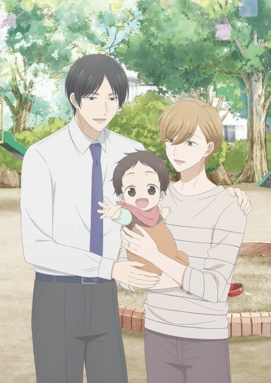
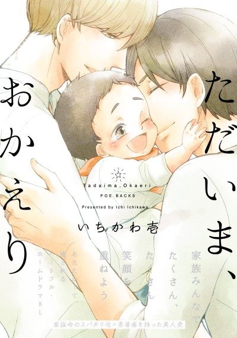

Anime
MangaTadaima, Okaeri
ただいま、おかえり
The anime takes the story to Unclear.
7.5AniList
—Animeter
12 epEpisodes
Is it worth pushing through?
Built from what visitors report across all 12 episodes.
Loading reports…Checking what other people said about this one.
Sign in above with your email to add your report.